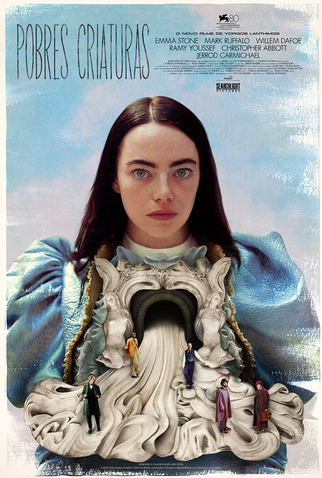

Assassino da lua das flores
Assassinos da Lua das Flores, filme do diretor Martin Scorsese, é inspirado no best-seller homônimo do escritor David Grann e também baseado em uma história real. O ano é 1920, na região norte-americana de Oklahoma e misteriosos assassinatos acontecem na tribo indígena de Osage, uma terra rica em petróleo. O caso foi investigado pelo FB, agência que tinha acabado de ser criada na época.
Duna 2
Em Duna: Parte 2, Paul Atreides (Timothée Chalamet) se une a Chani (Zendaya) e aos Fremen enquanto busca vingança contra os conspiradores que destruíram sua família. Uma jornada espiritual, mística e marcial se inicia. Paul deve evitar um futuro terrível que só ele pode prever. Se tudo sair como planejado, ele poderá guiar a humanidade para um futuro promissor.

Pobres criaturas
Pobres Criaturas é um filme de romance e ficção científica dirigido por Yorgos Lanthimos e produzido por Emma Stone, que também atua no longa. Baseada no livro homônimo de Alasdair Grey e referenciando o clássico Frankenstein, a história se passa na Era Vitoriana e acompanha Bella Baxter (interpretada por Stone), trazida de volta à vida após seu cérebro ser substituído pelo do filho que ainda não nasceu. O experimento é realizado pelo doutor Godwin Baxter (Willem Dafoe), um cientista brilhante, porém nada ortodoxo.